Какво е Чип Тунинг (Remap)?
Търсите качествен чип тунинг и ремап в Бургас и Карнобат? Apostolov Tuning предлага индивидуален Stage 1 софтуерен тунинг, Stage 2 ремап, ремап и 1:1 клониране на автоматични скоростни кутии (VAG DSG / S-Tronic и BMW ZF 6HP / 8HP), клониране на ECU и поправяне на лош софтуер. Използваме оригинално оборудване Magic Motorsport FLEX, Scanmatik 3 (SM3) + PCMFlash и Launch X431 с 100% дилърска диагностика преди и след процедурата.
Автомобилните производители често софтуерно ограничават мощността на двигателя заради маркетингови причини или екологични норми. Чрез прецизна индивидуална настройка на софтуера (ECU), ние оптимизираме работата на двигателя, без да надвишаваме безопасните лимити на компонентите. Свържете се с нас за индивидуална оферта.
Stage 1 Tuning
Оптимален баланс за всеки ден
Това е най-популярната услуга. Не изисква никакви механични промени по колата (смяна на части) – изцяло софтуерна оптимизация, напълно съвместима и със запазен работещ DPF филтър.
- 🚀 20–35% повече мощност и въртящ момент
- ⛽ По-нисък разход на гориво (при спокойно каране)
- ✅ По-бързо и безопасно изпреварване
- ✅ Запазва се заводската надеждност на двигателя
Stage 2 Tuning
За ентусиасти
Stage 2 изисква хардуерни подобрения, за да може двигателят да „диша“ по-добре. Обикновено това включва премахване на DPF/Катализатор (Downpipe), по-голям интеркулер, 3 Bar MAP сензор или спортен филтър.
- 🔥 Максимална безопасна мощност от стокова турбина
- 🔊 По-агресивен звук и опция за Hardcut / Popcorn / Pops & Bangs
- 🚦 Значително подобрено ускорение във високите обороти
Stage 3 Tuning
За ентусиасти и Custom проекти
Тук говорим за сериозен инженеринг. Stage 3 изисква смяна на основни хардуерни компоненти: хибридна или по-голяма турбина, по-големи дюзи, челен интеркулер, MAP сензор и подсилен съединител.
- 🚀 Индивидуална калибрация по живи логове
- 🔧 Калибриране за хибридно турбо, 3/4 Bar MAP и дюзи
- 🏁 Мощност далеч над заводските лимити
TCU Tuning и 1:1 Клониране (Скоростни кутии)
VAG DSG / S-Tronic & BMW ZF 6HP / 8HP
Софтуерната оптимизация на автоматичната скоростна кутия отключва пълния потенциал при Stage 1/2 и удължава живота на съединителите. Предлагаме и пълно 1:1 клониране на мехатроници (Flash + EEPROM) с Scanmatik 3 Pro + PCMFlash и MMS Flex.
- ⚡ По-бързо и плавно превключване без „бучене“ в ниските обороти
- 🔄 Премахване на лимита на въртящия момент (Torque Limiters)
- ⚙️ По-високо налягане на съединителите (Clamping Pressure)
- 🚀 Launch Control активация и 1:1 клониране на DQ200, DQ250, DQ381, DQ500, DL501, ZF 6HP/8HP
Реални Stage 1 & Ремап Проекти в Бургас и Карнобат
Част от реално завършените ни софтуерни ремапи – от модерни защитени компютри Bosch MD1/EDC17 до корекции на лошо направен софтуер и индивидуални настройки:


🚗 BMW F10 520d 184hp (EDC17C50)
🚀 Stage 1 Ремап | EGR & Вихрови клапи OFF
⚙️ DPF остава работещ с активна регенерация
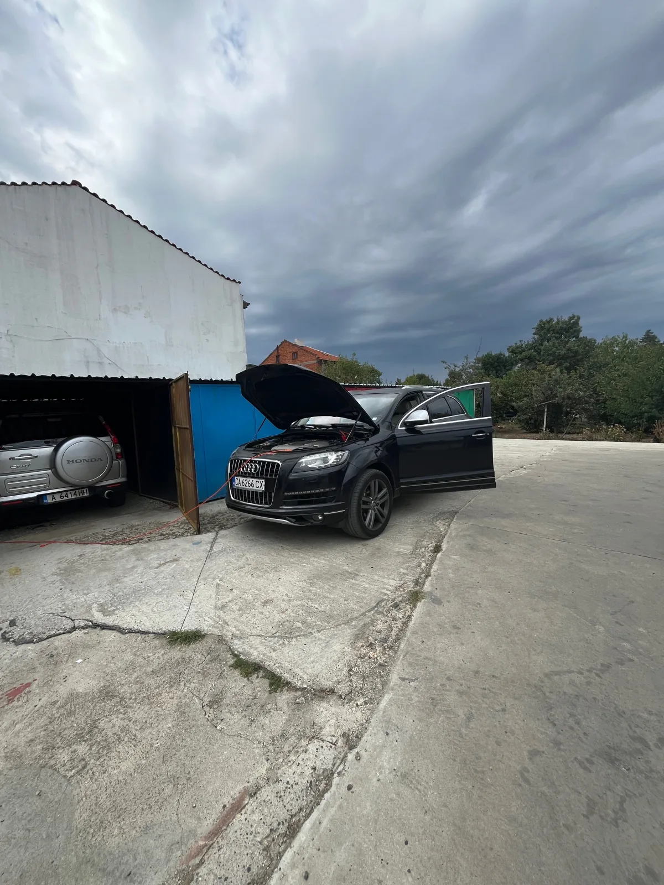
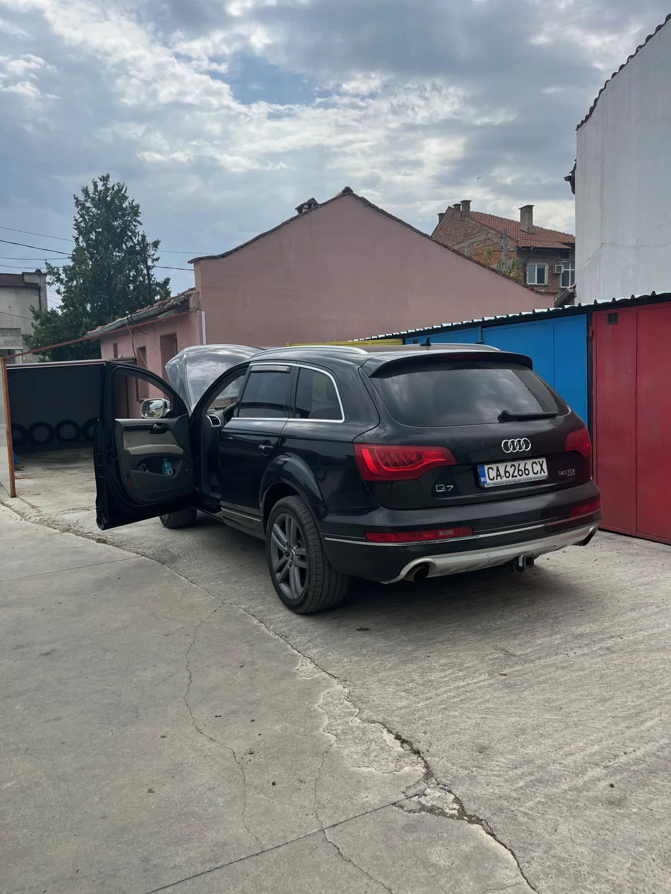
🚙 Audi Q7 3.0 TDI 233hp (EDC16CP34)
🚀 Ремап Stage 1 + DPF / EGR / Вихрови клапи OFF
⭐ „Колата ми се събуди! Бързо, лесно и надеждно.“
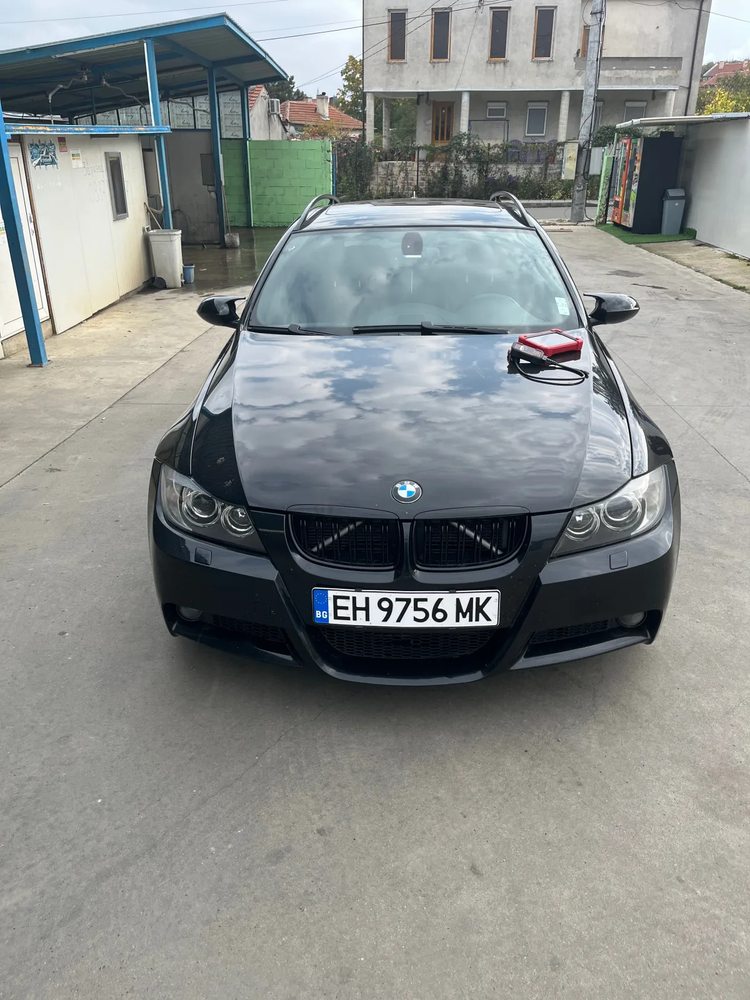
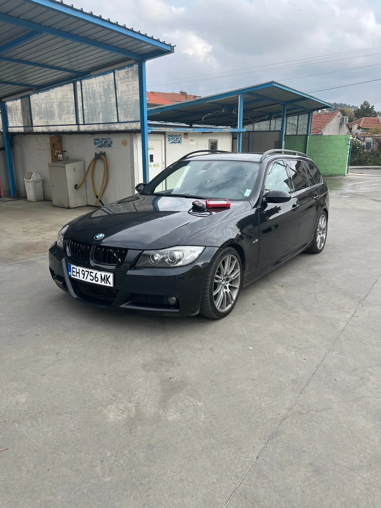
🚗 BMW E91 330d 231hp MT (EDC16C35)
🚀 Корекция на лош ремап + Stage 1 + Hardcut 4700 rpm
⭐ Плавен педал, без удари и без черен дим
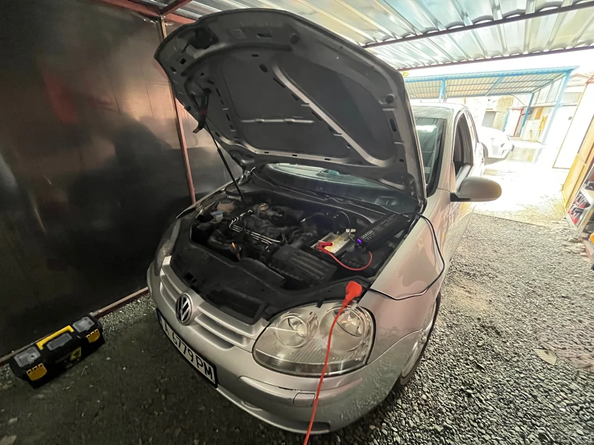
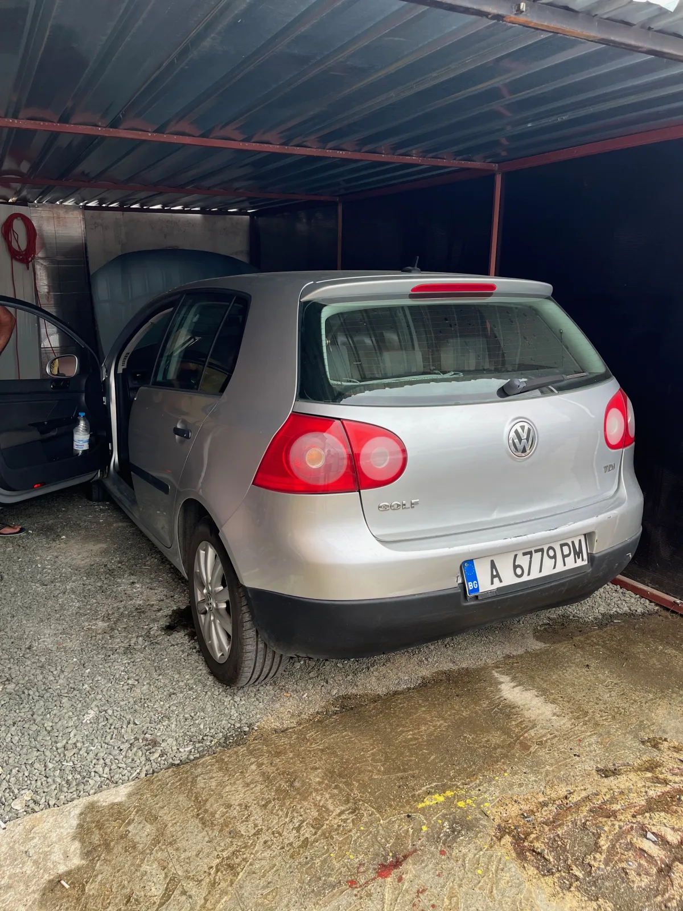
🚗 VW Golf 5 1.9 TDI 105hp (EDC16U34)
🚀 Stage 1 + 3 Bar MAP калибрация + EGR/MAF OFF
🔥 Прекъсвач (Popcorn) на 4500 оборота
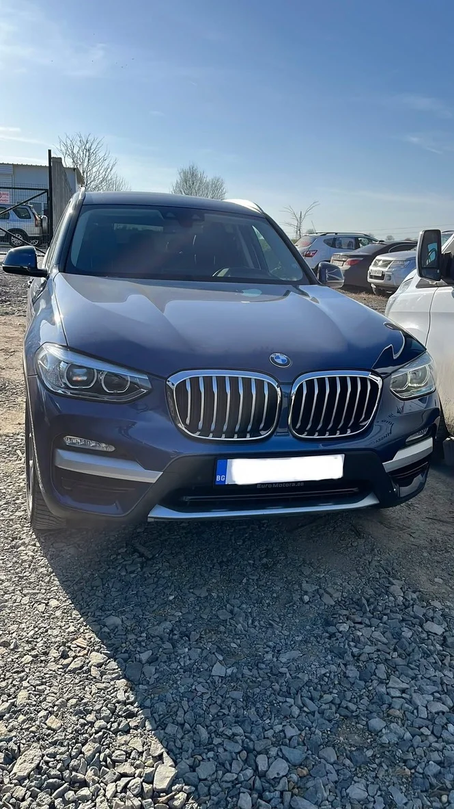
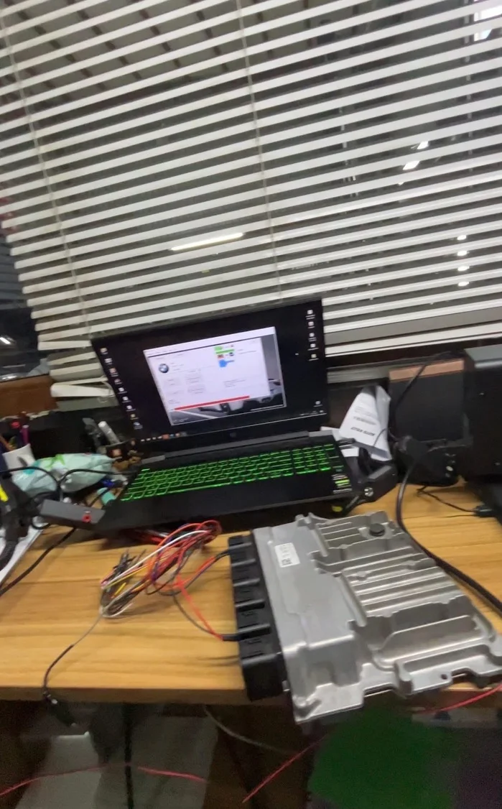
🚙 BMW X3 G01 2.0d (Bosch MD1)
🚀 Stage 1 Ремап на най-ново поколение MD1
⭐ „Още при първото каране се усеща разликата!“
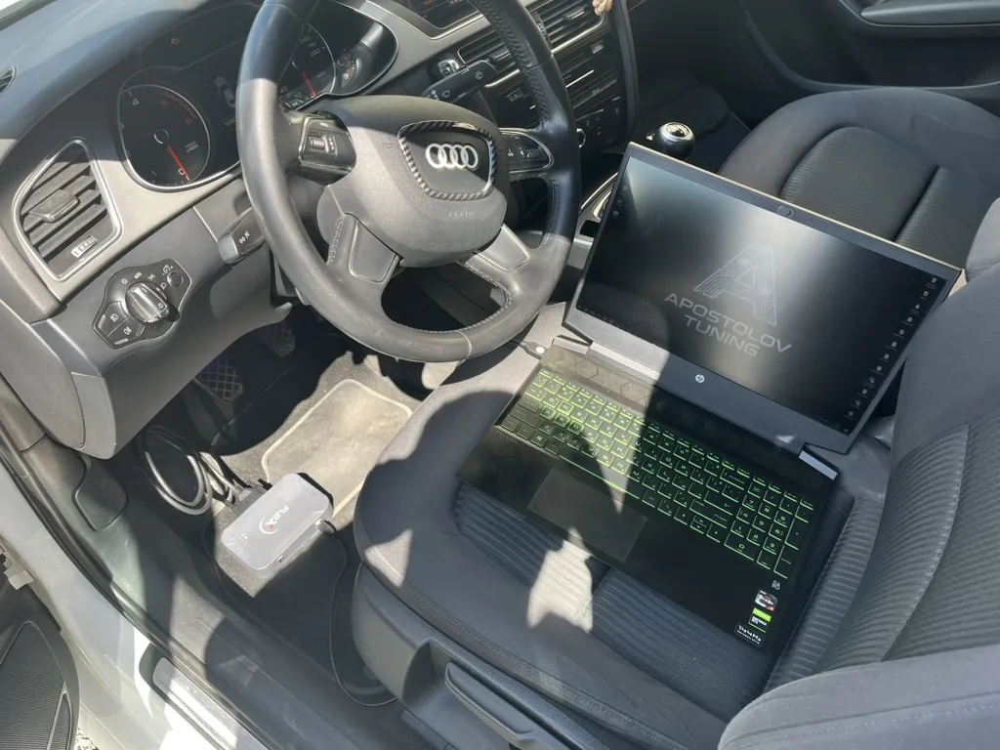
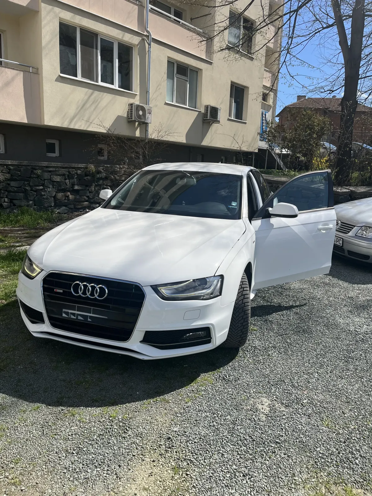
🚗 Audi A4 B9 2.0 TDI (EDC17C64)
🚀 Stage 1 + DPF / EGR / AdBlue OFF
🔥 Hardcut / Popcorn Limiter
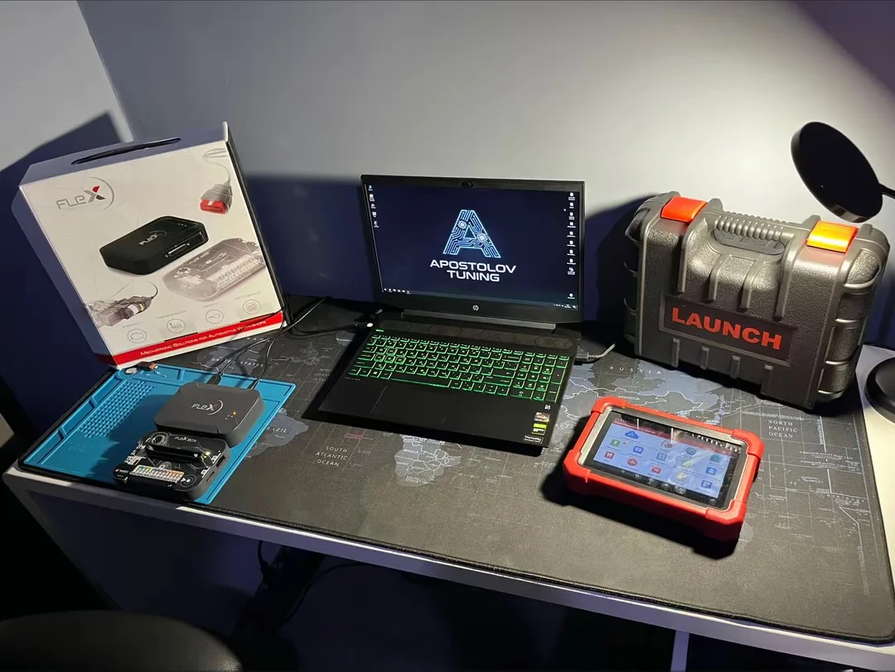
🚀 Технологично лидерство 2026
В Apostolov Tuning не правим компромиси. Инвестирахме в най-доброто от световните лидери – Magic Motorsport, Scanmatik 3 Pro + PCMFlash и Launch, за да предложим безкомпромисно качество и 100% сигурност.
🛠 FLEX (Original) от Magic Motorsport
Използваме оригинален инструмент с официална поддръжка. Покриваме най-новите Bosch MD1 / MG1 компютри и VAG MQB платформи в Bench / OBD / Boot режим.
💻 Launch X431 / CRP919X BT
Дилърско ниво диагностика с поддръжка на CAN-FD и DoIP. Пълна системна проверка, логване на данни в реално време, кодиране и адаптации на всички марки.
Поддържани Марки и Софтуерни Протоколи
🚗 Автомобилни Марки
Специализирани в VAG Групата (Audi, VW, Seat, Skoda), BMW (E, F и G серии), Mercedes-Benz, Honda, Toyota, Hyundai/Kia, Dacia, Renault, Peugeot/Citroen и много други.
💻 Компютри (ECU & TCU)
Работа с най-модерните управляващи блокове: Bosch (EDC16, EDC17, MD1, MG1), Siemens/Continental (SID, Simos, PCR2.1), Delphi, Marelli и Denso, както и скоростни кутии DSG и ZF 6HP/8HP.
🛠️ Софтуерни Решения
- • P0234 (Турбо пренадуване / Overboost – корекция на лош софтуер)
- • P0299 (Недостиг на налягане / Underboost)
- • Премахване на ограничител на скоростта (Vmax Off)
- • Pops & Bangs / Hardcut (Popcorn) ограничители
Нашият Процес (IT Стандарт)
1. Пълна Диагностика
2. Бекъп на Оригинала
3. Редакция на Файла
4. Тест и Логове
Често задавани въпроси
Какво представлява Stage 1 чип тунингът?
Stage 1 чип тунингът е индивидуална софтуерна оптимизация на управляващия блок на двигателя (ECU), при която се повишава мощността и въртящият момент с 20–35%. Тя не изисква механични промени и е напълно безопасна за ежедневна употреба, тъй като остава в рамките на заводските резерви на агрегата.
Каква е разликата между Stage 1 и Stage 2 ремап?
При Stage 1 оптимизацията е изцяло софтуерна, без промяна на части. При Stage 2 се изискват хардуерни подобрения, най-често по изпускателната и всмукателната система (даунпайп, премахване на DPF/катализатор, по-голям интеркулер или хибридно турбо) за постигане на още по-високи резултати.
Предлагате ли ремап и 1:1 клониране на автоматични скоростни кутии (DSG и ZF 6HP / 8HP)?
Да! Извършваме както софтуерен ремап на автоматични кутии (по-бърза смяна на предавките, оптимизирани обороти на превключване и вдигнати лимитери на въртящия момент), така и пълно 1:1 клониране на мехатроници (Flash + EEPROM) за VAG DSG / S-Tronic (DQ200, DQ250, DQ381, DQ500, DL501, VL381) и BMW ZF 6HP / ZF 8HP за клиенти и автосервизи.
Намалява ли се разходът на гориво след чип тунинг?
Да, при нормално ежедневно шофиране разходът на гориво може да спадне с около 5% до 10% (особено при турбодизеловите двигатели). Това се дължи на повишения въртящ момент в ниските обороти, което позволява по-ранно превключване на предавките.
Задължителна ли е диагностиката преди ремап?
Да, в Apostolov Tuning извършваме задължителна пълна компютърна диагностика преди всяка процедура. Ако по колата има неизправни сензори, проблеми с турбото, дюзите или съединителя, ремапът не се извършва, докато проблемите не бъдат отстранени.
Колко време отнема процедурата по чип тунинг?
В зависимост от марката, модела и сложността на ECU/TCU блока (дали се чете през OBD буксата или изисква работа в Bench/Boot режим на маса с Magic Motorsport FLEX и Scanmatik 3 + PCMFlash), процедурата отнема между 2 и 4 часа. Това включва диагностика, записване, тестове и логване на живи данни.